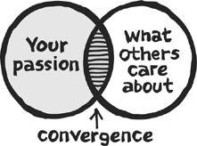

“The need for change bulldozed a road
down the center of my mind.”
—MAYA ANGELOU
On the Monday morning of May 4, 2009, Michael Hanna put on a Nordstrom suit with a colorful tie and headed to his office building in downtown Portland, Oregon. A twenty-five-year veteran sales professional, Michael spent his days attending meetings, pitching clients, and constantly responding to email.
Arriving at work, he settled into his cubicle, reading the news and checking a few emails. One of the messages was from his boss, asking to see him later that day. The morning passed uneventfully: more emails, phone calls, and planning for a big pitch. Michael took a client out to lunch, stopping off for an espresso recharge on the way back in. He returned in time to fire off a few more replies and head to the boss’s office.
Inside the office, Michael took a seat and noticed that his boss didn’t make eye contact. “After that,” he says, “everything happened in slow motion. I had heard story after story of this experience from other people, but I was always disconnected from it. I never thought it could happen to me.”
His boss mentioned the downturn in the economy, the unavoidable need to lose good people, and so on. An H.R. manager appeared out of nowhere, walking Michael to his desk and handing him a cardboard box—an actual box!—to pack up his things. Michael wasn’t sure what to say, but he tried to put on a brave face for his nearby colleagues. He drove home at two-thirty, thinking about how to tell his wife, Mary Ruth, and their two children that he no longer had a job.
After the shock wore off, Michael settled into an unfamiliar routine, collecting unemployment checks and hunting for job leads. The search was tough. He was highly qualified, but so were plenty of other people out pounding the pavement every day. The industry was changing, and it was far from certain that Michael could return to a well-paying job at the same level he had worked before.
One day, a friend who owned a furniture store mentioned that he had a truckload of closeout mattresses and no use for them. “You could probably sell these things one at a time on Craigslist and do pretty well,” he told Michael. The idea sounded crazy, but nothing was happening on the job front. Michael figured if nothing else, he could at least sell the mattresses at cost. He called Mary Ruth: “Honey, it’s a long story, but is it OK if I buy a bunch of mattresses?”
The next step was to find a location to stash the goods. Hunting around the city, Michael found a car dealership that had gone out of business recently. Times were hard in the real estate business too, so when Michael called the landlord to see if he could set up shop inside the old showroom, he had a deal. The first inventory went quickly through Craigslist and word of mouth, and the biggest problem was answering questions from potential customers about what kind of mattress they should buy. “I had no business plan and no knowledge of mattresses,” Michael said. “My impression of mattress stores was that they were seedy, high-pressure places. I wasn’t sure what kind of place I was trying to build, but I knew it had to be a welcoming environment where customers weren’t hassled.”
After the first experience went well, Michael took the plunge and studied up on mattresses, talking to local suppliers and negotiating with the landlord to remain in the former car showroom. Mary Ruth built a website. The concept of a no-hard-sell mattress store went over well in Portland, and business grew when the store offered the industry’s first-ever mattress delivery by bicycle. (A friend built a custom tandem bike with a platform on the back that could hold a king-size mattress.) Customers who rode their own bikes to the store received free delivery, a pricing tactic that inspired loyalty and a number of fan videos uploaded to YouTube.
It wasn’t what Michael had ever expected to do, but he had built a real business, profitable right from the first truckload of mattresses and providing enough money to support his family. On the two-year anniversary of his abrupt departure from corporate life, Michael was looking through his closet when he spotted the Nordstrom suit he had worn on his last day. Over the last two years, he hadn’t worn it—or any other professional dress clothes—a single time. He carried the suit out to his bike, dropped it off at Goodwill, and continued on to the mattress store. “It’s been an amazing two years since I lost my job,” he says now. “I went from corporate guy to mattress deliveryman, and I’ve never been happier.”
Across town from Michael’s accidental mattress shop, first-time entrepreneur Sarah Young was opening a yarn store around the same time. When asked why she took the plunge at the height of the economic downturn and with no experience running a business, Sarah said: “It’s not that I had no experience; I just had a different kind of experience. I wasn’t an entrepreneur before, but I was a shopper. I knew what I wanted, and it didn’t exist, so I built it.” Sarah’s yarn store, profiled further in Chapter 11, was profitable within six months and has inspired an international following.
Meanwhile, elsewhere around the world, others were skipping the part about having an actual storefront, opening Internet-based businesses at almost zero startup cost. In England, Susannah Conway started teaching photography classes for fun and got the surprise of her life when she made more money than she did as a journalist. (Question: “What did you not foresee when starting up?” Answer: “I didn’t know I was starting up!”)
Benny Lewis graduated from a university in Ireland with an engineering degree, but never put it to use. Instead he found a way to make a living as a “professional language hacker,” traveling the world and helping students quickly learn to speak other languages. (Question: “Is there anything else we should know about your business?” Answer: “Yes. Stop calling it a business! I’m having the time of my life.”)
Welcome to the strange new world of micro-entrepreneurship. In this world, operating independently from much of the other business news you hear about, Indian bloggers make $200,000 a year. Roaming, independent publishers operate from Buenos Aires and Bangkok. Product launches from one-man or one-woman businesses bring in $100,000 in a single day, causing nervous bank managers to shut down the accounts because they don’t understand what’s happening.
Oddly, many of these unusual businesses thrive by giving things away, recruiting a legion of fans and followers who support their paid work whenever it is finally offered. “My marketing plan is strategic giving,” said Megan Hunt, who makes hand-crafted dresses and wedding accessories in Omaha, Nebraska, shipping them all over the world. “Empowering others is our greatest marketing effort,” said Scott Meyer from South Dakota. “We host training sessions, give away free materials, and answer any question someone emails to us at no charge whatsoever.”
In some ways, renegade entrepreneurs who buck the system and go it alone are nothing new. Microbusinesses—businesses typically run by only one person—have been around since the beginning of commerce. Merchants roamed the streets of ancient Athens and Rome, hawking their wares. In many parts of rural Africa and Asia, much commerce still takes place through small transactions and barter.
Unconventional approaches to marketing and public relations have also been around for a while. Long before it was common, a band had an idea for communicating directly with fans, bypassing the traditional structure of record labels as much as possible. The fans felt like they were part of a community instead of just a crowd of adoring listeners. Oh, and instead of relying primarily on album sales for income, the band would rely on ticket sales and merchandising at an unending series of live concerts. The example sounds like it’s happening today, but the year was 1967, and the band was the Grateful Dead.
What’s new, however, is how quickly someone can start a business and reach a group of customers. The building process is much faster and cheaper today than it has ever been. Going from idea to startup can now take less than a month and cost less than $100—just ask any of the people whose stories you’ll read in this book. Commerce may have been around forever, but scale, reach, and connection have changed dramatically. The handyman who does odd jobs and repairs used to put up flyers at the grocery store; now he advertises through Google to people searching for “kitchen cabinet installation” in their city.
It’s not an elitist club; it’s a middle-class, leaderless movement. All around the world, ordinary people are opting out of traditional employment and making their own way. Instead of fighting the system, they’re creating their own form of work—usually without much training, and almost always without much money. These unexpected entrepreneurs have turned their passion into profit while creating a more meaningful life for themselves.
What if you could do this too? What if you could have the same freedom to set your own schedule and determine your own priorities? Good news: Freedom is possible. More good news: Freedom isn’t something to be envisioned in the vaguely distant future—the future is now.
I’ve been hearing stories about unconventional businesses for at least a decade, even as I’ve been operating a series of them myself. Through my work as a writer and entrepreneur, I had access to a wide circle of microbusiness case studies: profitable businesses typically run solely by one person without much in the way of startup capital. In preparing for a comprehensive study, I began by checking with many of my friends and colleagues, but I didn’t stop there.
In 2010 I produced a series of workshops on low-budget business ideas with Pamela Slim, author of Escape from Cubicle Nation. The first time we announced a workshop, it sold out in ninety minutes. We then offered spots in another workshop that wouldn’t be held for several months, and it sold out before lunchtime. Since it was clear we had found a demand for this information, I dug deeper.
While hosting the workshops, I became interested in the “follow-your-passion” model—the idea that successful small businesses are often built on the pursuit of a personal hobby or interest. I conducted interviews with entrepreneurs all over the world and documented their stories for an online course called the Empire Building Kit. The course was the inspiration for launching the project on a wider scale and then for writing this book.
I had a number of case studies in mind at the outset, but in preparation for writing the book, I cast the net much wider. I drew respondents from online and offline, collecting data through a Google form that grew to thousands of data points. As I traveled to sixty-three cities in North America on a book tour, I kept meeting and hearing about more unconventional, accidental entrepreneurs.
When I finally closed the nomination process, I had more than 1,500 respondents to choose from. All of the respondents met at least four of the following six criteria:
• Follow-your-passion model. Many people are interested in building a business that is based on a hobby or activity they are especially enthusiastic about. As we’ll see, not every passion leads to big bank deposits, but some certainly do.
• Low startup cost. I was interested in businesses that required less than $1,000 in startup capital, especially those that cost almost nothing (less than $100) to begin.
• At least $50,000 a year in net income. I wanted profitable businesses that earned at least as much as the average North American income. As we go along, you’ll notice that the range varies considerably, with many businesses earning healthy six-figure incomes or higher, but a baseline profitability level of at least $50,000 a year was required.
• No special skills. Since we were looking at ordinary people who created a successful business, I had a bias toward businesses that anyone can operate. This point can be hard to define, but there’s a key distinction: Many businesses require specialized skills of some kind, but they are skills that can be acquired through a short period of training or independent study. You could learn to be a coffee roaster on the job, for example, but hopefully not a dentist.
• Full financial disclosure. Respondents for the study agreed to disclose their income projection for the current year and actual income for at least the previous two years. Furthermore, they had to be willing to discuss income and expenses in specific terms.
• Fewer than five employees. For the most part, I was interested in unexpected or accidental entrepreneurs who deliberately chose to remain small. Many of the case studies are from businesses operated strictly by one person, which closely relates to the goal of personal freedom that so many respondents identified.
I excluded businesses that were in “adult” or quasi-legal markets, and in most cases also excluded businesses that were highly technical or required special skills to operate. The baseline test was, “Could you explain what you do to your grandmother, and would you be willing to?”
Next, I wanted to look at businesses started by people all over the world. About half of our stories come from the United States, and half come from the rest of the world. From Silicon Valley to Atlanta, the U.S. is a hub for entrepreneurship, both in terms of values and ease of startup. But as we’ll see, people from all over the world are creating their own microbusinesses, sometimes following the U.S. model and other times doing it independently.
Finally, in making the last selections for the studies presented here, I had a bias toward “interesting” stories. Not every business needs to be sexy or trendworthy—in fact, many of the ones here aren’t—but I liked stories that highlighted originality and creativity. Two years ago in Minneapolis, Lisa Sellman attracted my attention by telling me about her dog care business. At first, I didn’t think much of it. How profitable could a dog care business be? But then Lisa told me how much money she made: $88,000 the previous year and on track to clear six figures the next. All of a sudden I was interested. How did Lisa do it … and what lessons could we learn from her?
Each case study subject completed several detailed surveys about his or her business, including financial data and demographics, in addition to dozens of open-ended questions. The group surveys were followed up with further individual questions in hundreds of emails, phone calls, Skype video calls, and in-person meetings in fifteen cities around the world. My goal was to create a narrative by finding common themes among a diverse group. The collected data would be enough for several thick books by itself, but I’ve tried to present only the most important information here. You can learn more about the methodology for the study, including survey data and specific interviews, at 100startup.com.
In other studies, books, and media coverage, two kinds of business models get most of the attention. Business model number one is old-school: An inventor gets an idea and persuades the bank to lend her money for a growing operation, or a company spins off a division to create another company. Most corporations traded on the stock market fit this category. Business model number two is the investment-driven startup, which is typically focused on venture capital, buyouts, advertising, and market share. The business is initiated by a founder or small group of partners, but often run by a management team, reporting to a board of directors who seek to increase the business’s valuation with the goal of “going public” or being acquired.
Each of the older models has strengths, weaknesses, and various other characteristics. In both of them, there is no shortage of success and failure stories. But these models and their stories are not our concern here. While business models number one and number two have been getting all the attention, something else has been happening quietly—something completely different.
Our story is about people who start their own microbusinesses without investment, without employees, and often without much of an idea of what they’re doing. They almost never have a formal business plan, and they often don’t have a plan at all besides “Try this out and see what happens.” More often than not, the business launches quickly, without waiting for permission from a board or manager. Market testing happens on the fly. “Are customers buying?” If the answer is yes, good. If no, what can we do differently?
Like Michael’s progression from corporate guy to mattress bicyclist, many of our case studies started businesses accidentally after experiencing a hardship such as losing a job. In Massachusetts, Jessica Reagan Salzman’s husband called from work to say he was coming home early—and he wouldn’t be going back to the office the next day. The unexpected layoff catapulted Jessica, new mother to a three-week-old, into action. Her part-time bookkeeping “hobby” became the family’s full-time income. In Pennsylvania, Tara Gentile started her business with the goal of being able to work from home while caring for her children; the business grew so quickly that her husband ended up staying home too.
Across the Atlantic, David Henzell was a director for the largest advertising agency outside London. He left in part because he was bored with the work, and in part because of a diagnosis of chronic fatigue syndrome that left him struggling with “chronic director responsibilities.” In his new company, Lightbulb Design, he makes the rules. “For a while the illness managed me,” he said, “but now I manage it. Lightbulb started as a way for me to make a living on my terms. It’s still on my terms, but now we are kicking ass!”
The people we’ll meet vary considerably in the ways they chose to structure their projects. Some eventually opted for expansion, either by hiring or building teams of “virtual assistants.” Erica Cosminsky grew her transcription team to seventeen people at one point, but by working with contractors instead of hiring employees, she retained the freedom to keep things simple. The Tom Bihn luggage factory in Seattle grew to a seven-figure operation, while remaining completely independent and turning down offers to sell its line to big-box stores.
Others pursued partnerships that allowed each person to focus on what he or she was best at. Fresh out of design school and disillusioned with their entry-level jobs, Jen Adrion and Omar Noory began selling custom-made maps out of an apartment in Columbus, Ohio. Patrick McCrann and Rich Strauss were competitors who teamed up to create a community for endurance athletes. Several of our stories are about married couples or partners building a business together.
But many others chose to go it alone, with the conviction that they would find freedom by working primarily by themselves. Charlie Pabst was a successful architect with a “dream job” as a store designer for Starbucks. But the desire for autonomy overcame the comfort of the dream job and the free lattes: “One day I drove to work and realized I couldn’t do it anymore, called in sick, drafted my two-week notice, and the rest is history.” Charlie still works as a designer, but now he works from home for clients of his choosing.
We’ll view these stories as an ensemble: a group of individual voices that, when considered together, comprise an original composition. In sharing how different people have set themselves free from corporate misery, the challenge is to acknowledge their courage without exaggerating their skills. Most of them aren’t geniuses or natural-born entrepreneurs; they are ordinary people who made a few key decisions that changed their lives. Very few of our case studies went to business school, and more than half had no previous business experience whatsoever. Several dropped out of college, and others never went in the first place.*
In sharing these stories, the goal is to provide a blueprint for freedom, a plan you can use to apply their lessons to your own escape plan. Throughout the case studies, three lessons of micro-entrepreneurship emerge. We’ll focus on these lessons in various ways throughout the book.
As we’ll examine it, convergence represents the intersection between something you especially like to do or are good at doing (preferably both) and what other people are also interested in. The easiest way to understand convergence is to think of it as the overlapping space between what you care about and what other people are willing to spend money on.
Consider these circles:

Not everything that you are passionate about or skilled in is interesting to the rest of the world, and not everything is marketable. I can be very passionate about eating pizza, but no one is going to pay me to do it. Likewise, any individual person won’t be able to provide a solution to every problem or be interesting to everyone. But in the overlap between the two circles, where passion or skill meets usefulness, a microbusiness built on freedom and value can thrive.
Many of the projects we’ll examine were started by people with related skills, not necessarily the skill most used in the project. For example, teachers are usually good at more than just teaching; they’re also good at things such as communication, adaptability, crowd control, lesson planning, and coordinating among different interest groups (children, parents, administrators, colleagues). Teaching is a noble career on its own, but these skills can also be put to good use in building a business.
The easiest way to understand skill transformation is to realize that you’re probably good at more than one thing. Originally from Germany, Kat Alder was waitressing in London when someone said to her, “You know, you’d be really good at PR.” Kat didn’t know anything about PR—she wasn’t even sure it stood for “public relations”—but she knew she was a good waitress, always getting good tips and making her customers happy by recommending items from the menu that she was sure they would like.
After she was let go from another temporary job at the BBC, she thought back on the conversation. She still didn’t know much about the PR industry, but she landed her first client within a month and figured it out. Four years later, her firm employs five people and operates in London, Berlin, New York, and China. Kat was a great waitress and learned to apply similar “people skills” to publicizing her clients, creating a business that was more profitable, sustainable, and fun than working for someone else and endlessly repeating the list of daily specials.
Contrary to conventional wisdom, success in entrepreneurship isn’t necessarily related to being the best at any particular activity. Scott Adams, the creator of the Dilbert comic series, explains his success this way:
I succeeded as a cartoonist with negligible art talent, some basic writing skills, an ordinary sense of humor and a bit of experience in the business world. The “Dilbert” comic is a combination of all four skills. The world has plenty of better artists, smarter writers, funnier humorists and more experienced business people. The rare part is that each of those modest skills is collected in one person. That’s how value is created.†
To succeed in a business project, especially one you’re excited about, it helps to think carefully about all the skills you have that could be helpful to others and particularly about the combination of those skills.
Bringing the first two ideas together, here is the not-so-secret recipe for microbusiness alchemy:
Passion or skill + usefulness = success
Throughout the book, we’ll examine case studies by referring to this formula. Jaden Hair forged a career as the host of Steamy Kitchen, a cooking show and website featuring Asian cuisine. From an initial investment of $200, cookbooks, TV offers, and corporate sponsorship have all come her way due to the merging of passion and usefulness. The recipes Jaden shares with a large community on a daily basis are easy, healthy, and very popular—when I met her at an event she was hosting in Austin, I could barely get through the throngs of admirers to say hi. (Read more of Jaden’s story in Chapter 2.)
Elsewhere, Brandon Pearce was a piano teacher struggling to keep up with the administrative side of his work. A programming hobbyist, he created software to help track his students, scheduling, and payment. “I did the whole project with no intention of making it into a business,” he said. “But then other teachers started showing interest, and I thought maybe I could make a few extra bucks with it.” The few extra bucks turned into a full-time income and more, with current income in excess of $30,000 a month. A native of Utah, Brandon now lives with his family at their second home in Costa Rica when they aren’t exploring the rest of the world. (Read more of Brandon’s story in Chapter 4.)
In the quest for freedom, we’ll look at the nuts and bolts of building a microbusiness through the lens of those who have done it. The basics of starting a business are very simple; you don’t need an MBA (keep the $60,000 tuition), venture capital, or even a detailed plan. You just need a product or service, a group of people willing to pay for it, and a way to get paid. This can be broken down as follows:
1. Product or service: what you sell
2. People willing to pay for it: your customers
3. A way to get paid: how you’ll exchange a product or service for money
If you have a group of interested people but nothing to sell, you don’t have a business. If you have something to sell but no one willing to buy it, you don’t have a business. In both cases, without a clear and easy way for customers to pay for what you offer, you don’t have a business. Put the three together, and congratulations—you’re now an entrepreneur.
These are the bare bones of any project; there’s no need to overcomplicate things. But to look at it more closely, it helps to have an offer: a combination of product or service plus the messaging that makes a case to potential buyers. The initial work can be a challenge, but after the typical business gets going, you can usually take a number of steps to ramp up sales and income—if you want to. It helps to have a strategy of building interest and attracting attention, described here as hustling. Instead of just popping up one day with an offer, it helps to craft a launch event to get buyers excited ahead of time.
We’ll look at each of these concepts in precise detail, down to dollars-and-cents figures from those who have gone before. The goal is to explain what people have done that works and closely examine how it can be replicated elsewhere. The lessons and case studies illustrate a business-creation method that has worked many times over: Build something that people want and give it to them.
There’s no failproof method; in fact, failure is often the best teacher. Along the way, we’ll meet an artist whose studio collapsed underneath him as he stood on the roof, frantically shoveling snow. We’ll see how an adventure travel provider recovered after hearing that the South Pacific island they were taking guests to the next morning was no longer receiving visitors. Sometimes the challenge comes from too much business instead of too little: In Chicago, we’ll see what happens when a business struggles under the weight of an unexpected two thousand new customers in a single day. We’ll study how these and other brave entrepreneurs forged ahead and kept going, turning potential disasters into long-term successes.
The constant themes in our study are freedom and value, but the undercurrent to both is the theme of change. From his home base in Seattle, James Kirk used to build and manage computer data centers around the country. But in an act of conviction that took less than six months from idea to execution, he packed up a 2006 Mustang and left Seattle for South Carolina, on a mission to start an authentic coffee shop in the land of biscuits and iced tea. Once he made the decision, he says, all other options were closed: “There was one moment very early on when I realized, this is what I want to do, and this is what I am going to do. And that was that. Decision made. I’ll figure the rest out.”
As we’ll see, James later got serious about making a real plan, but the more important step was the decision to proceed. Ready or not, he was heading for a major change, and it couldn’t come soon enough. A few short months later, Jamestown Coffee opened for business in Lexington, South Carolina. James and his new staff had worked ten-hour days for several weeks to prepare for the opening. But there it was: a ribbon to be cut, the mayor on hand to welcome the business to the community, and a line of customers eager to sample the wares. The day had come at last, and there was no looking back.
KEY POINTS
Microbusinesses aren’t new; they’ve been around since the beginning of commerce. What’s changed, however, is the ability to test, launch, and scale your project quickly and on the cheap.
*Jeremy Brown attended two years of technical school but left without graduating. After he founded a successful company, the school invited him back to speak to students as a “success story,” not realizing that his success had come from leaving the program to go out on his own. “The speech was a little awkward,” he says, “but the students liked it.”
†Scott Adams, “How to Get a Real Education at College,” The Wall Street Journal, April 9, 2011.